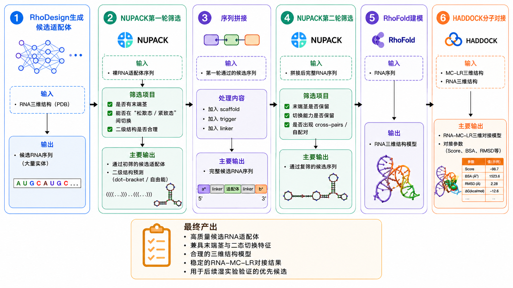
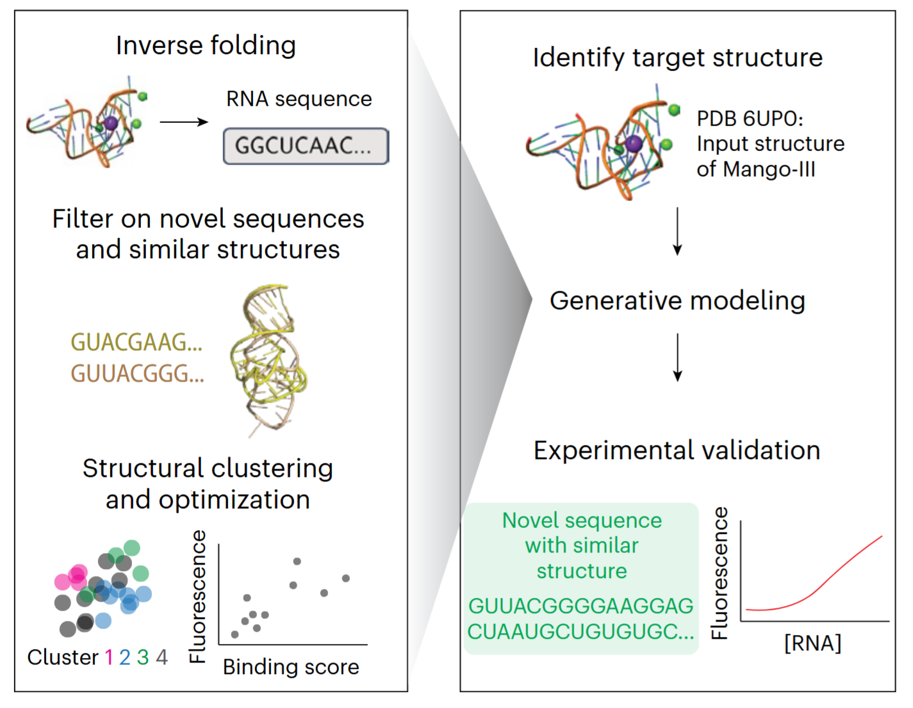
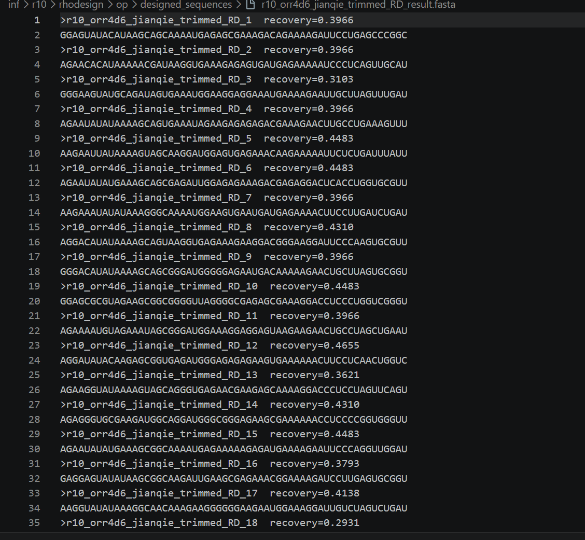
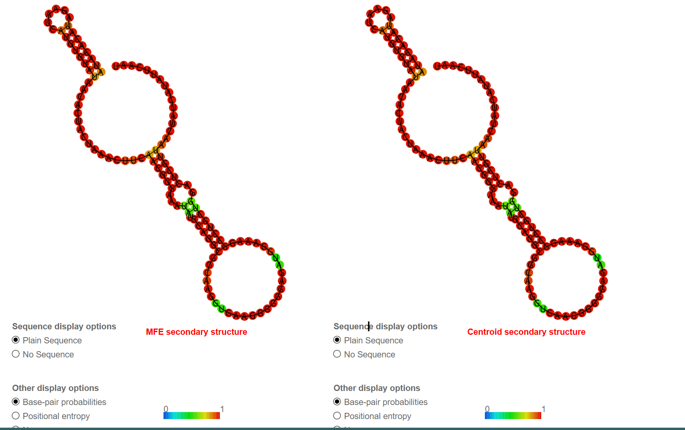
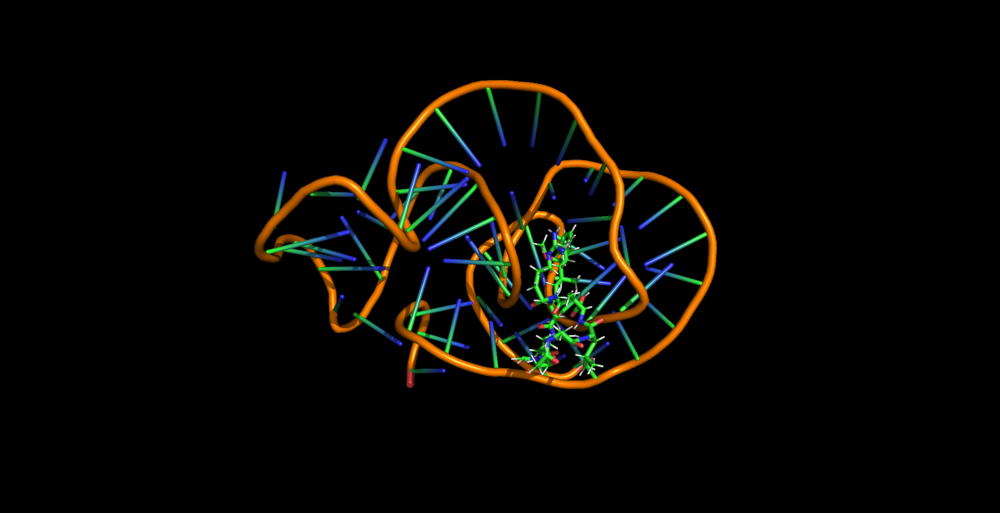
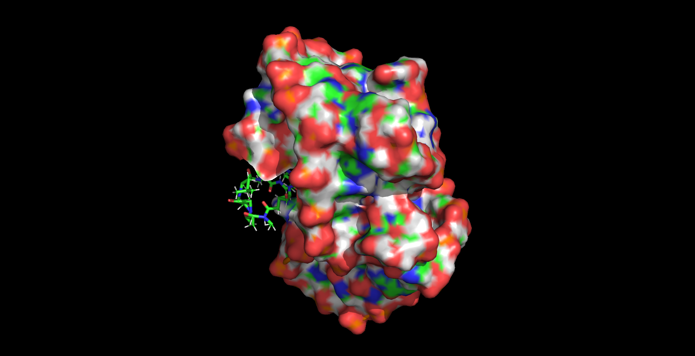

Start
Input
The intended input is an RNA design target and structural constraints for candidate aptamer generation.
Model
The dry-lab page translates the supplied computational workflow into a longer iGEM-style explanation without inventing missing numerical results.

Candidate generation
The source material lists RhoDesign as the candidate-generation model. In the final wiki, this section should explain the input structure, target constraints, generated sequence count, and why the model is appropriate for MC-LR aptamer design.
Start
The intended input is an RNA design target and structural constraints for candidate aptamer generation.
Design
Candidate RNA sequences are passed to secondary-structure filtering rather than treated as final hits.
Pending
Exact model settings and generated candidate counts are not yet supplied.

Screening
The workflow uses NUPACK in two rounds. First, naked aptamer candidates are checked for plausible secondary structure and thermodynamic behavior.
Then the full joined design is evaluated after adding switch-related sequence context. The goal is to avoid candidates that only look good before being embedded in the sensing architecture.

Sequence integration
The material describes checks on terminal stems, two-state switching behavior, and unwanted cross-pairing between functional regions.
This is important because an aptamer that folds well alone may fail once trigger arms, linkers, and switch-context sequences are attached.
3D and docking
The dry-lab workflow proceeds from secondary structure to 3D folding and docking. The current project material names the tools and shows the process, but it does not yet provide a final ranked table of binding poses or docking scores.



Content pending
These items are not available in the current verified materials.